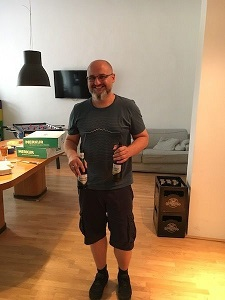
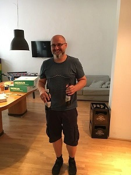

Infrastructure as a Meetup
We are Testers, SysAdmins, DBAs, Ops, DevOps, Manager, Devs,... who meet every 3 months to discuss DevOps things. We adore talking about growing a culture as a base for a DevOps mindset. And of course, we love to talk about technical stuff like Containers, Docker, Ansible, Salt, Linux, Continuous Deployment, Continuous Delivery, Kubernetes,...
IaaM Manifesto
Discussion over MonologueCoding over Presentation
Being focused over growth
Being nice over being not nice
Next Meetup
27 September, 2017 @ factory300
NO AGENDA We'll try an unmeetup - feel free to prepare something to talk aboutDone Meetups
28 June, 2017 @ Smarter Ecommerce
My Docker journey - Thomas EinwallerContinuous Delivery with GitLab and Docker - Matthias Braun
DevOps Questionnaire - Hubert Ströbitzer
Unikernels - Johann Hubert Sonntagbauer


 



------
made with love by an engineer without any UI skills
made with love by an engineer without any UI skills